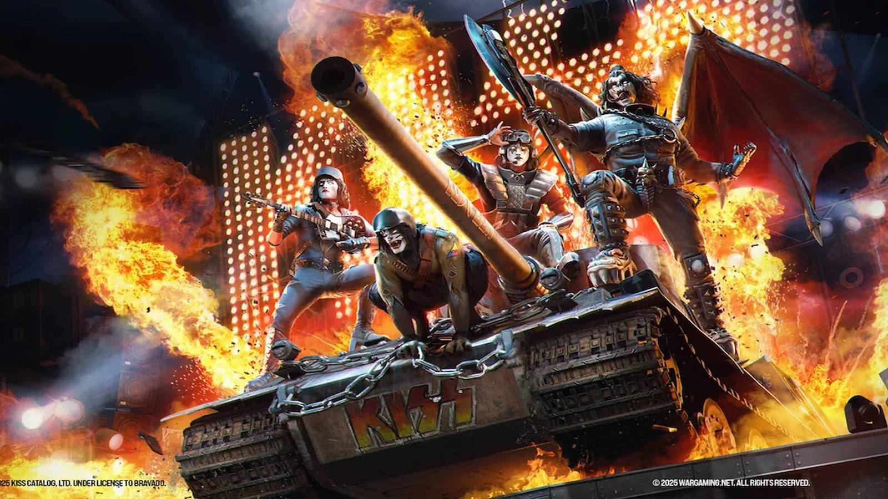

Farewell To Ace: How Kiss's Frehley Revolutionized the Stagecraft Of Rock
{kind=link}

Rock fans around the world raised their flags this week with the news that Paul Daniel “Ace” Frehley passed away at the age of 74. On Friday, music lovers reflect on Frehley’s spectacular legacy as the electrifying lead guitarist of Kiss, his cosmic persona playing a lead part in propelling the band to global stardom as pioneers of theatrical rock.
Frehley's life changed in 1972 when he responded to an ad placed in NYC’s Village Voice, seeking a lead guitarist with "flash and ability." Driven to the audition by his mother, he met Gene Simmons, Paul Stanley, and Peter Criss. Joining them to form Kiss, Frehley crafted his own "Space Ace" persona, helping establish the band as rock’s leading theatrical act.
The band’s iconic “Spaceman” was inspired by Frehley's obsessive love of sci-fi, leading him to don his infamous silver-star face paint and rig his guitars for pyrotechnics. His infamously theatrical performances featured his instruments decked out with smoking necks, glowing bodies, and rocket-launching headstocks, transforming stages into interstellar battlegrounds.
Frehley Is Once And Always “The Spaceman”
Frehley was so committed to his sci-persona that, along with bandmates Gene “The Demon” Simmons, Paul “The Starchild” Stanley, and Peter “The Catman” Criss, he embraced the anonymity of the alias and made it a cornerstone of the band’s live shows (and marketing strategy). The band wasn’t seen publicly without their makeup and attire for an entire decade.
Frehley and his Kiss comrades transformed their live shows into an unforgettable spectacle — fiery pyrotechnics, elaborate costumes, and Kiss’ iconic face paint. Frehley and Kiss went to such efforts to maintain the illusion, they took precautions like covering their faces while on tour to preserve the illusion. It held until a public reinvention with their 1983 album Lick It Up.
Frehley unveiled both his persona and his fiery riffs on Kiss's 1974 self-titled debut, tearing into the heavy-rock landscape with standout performances on tracks like "Strutter" and "Black Diamond." Frehley assumed the "everyman" position in the comic-book lineup of Kiss; his devilish laugh and onstage stagger marked him as the band’s relatable rock anti-hero.
Saying Farewell To The Legendary ‘Space Ace’
Helping steer Kiss to more than 100 million sales worldwide, he penned fan favorites during the band’s original “makeup era” like "Cold Gin," "Parasite," "Shock Me," and "Rocket Ride." When each of the band’s four members branched out briefly in 1978 for a solo album, Frehley’s was embraced with the most warmth (not to mention selling the most records).
After leaving the band in 1982, he eventually launched Frehley’s Comet in 1987, debuting with bangers like “Rock Soldiers” and “Into the Night,” and putting his resilience on display after years of battling with addiction. These were joined by Frehley’s other solo efforts, like Trouble Walkin’ in 1989, Anomaly in 2009, as well as Space Invader in 2014.
Frehley rejoined Kiss for the band’s sprawling “Reunion Tour” between 1996 and 2002, returning to the stage to secure his legacy with his trademark pyrotechnics. In true rock n’ roll style, his relationship with his bandmates was often frosty over the years. However, it’s done naught to flame out the cosmic legacy of the Spaceman as he travels the galaxy forevermore.